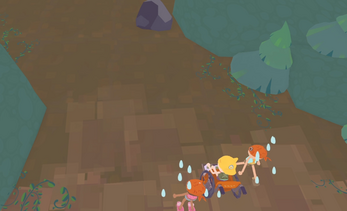
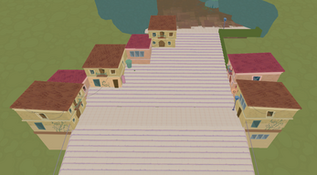
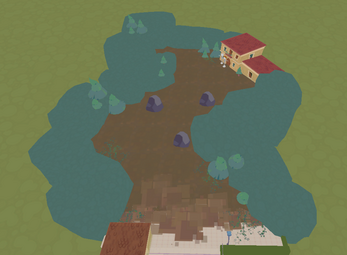
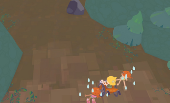
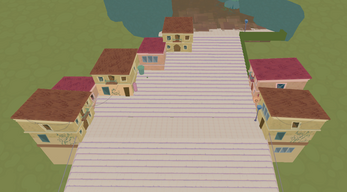
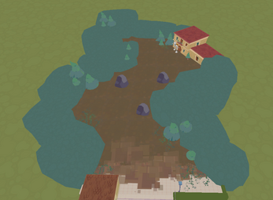

No Way Up
GAMEPLAY
DESCRIPTION
This game follows the journey of two friends helping a third friend in a wheelchair navigate public spaces filled with invisible barriers — broken elevators, stairways without alternatives, and ramps that are impossible to climb.
Each level introduces increasingly demanding obstacles that require faster reactions and tighter coordination. Combined with intentionally clumsy physics and ragdoll-based character movement, every attempt becomes a blend of challenge and chaotic comedy.
As the experience unfolds, the narrative grows from this shared journey, highlighting how something as simple as moving through everyday spaces can become a struggle, and how cooperation becomes not just helpful, but essential.
My role in the project was primarily Programmer. I was responsible for implementing core gameplay systems, character controls, physics interactions, and cooperative mechanics. I worked on refining the ragdoll behavior to balance unpredictability with responsiveness, ensuring the experience remained both challenging and intentionally humorous while maintaining gameplay clarity.
SCREENSHOTS
 




